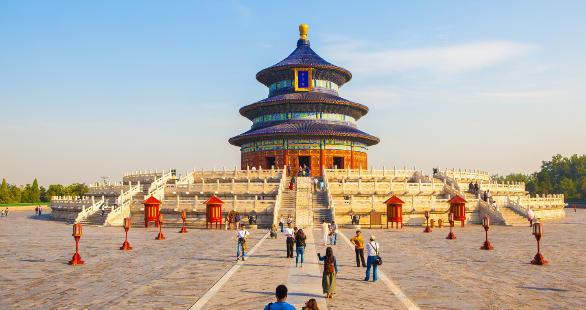
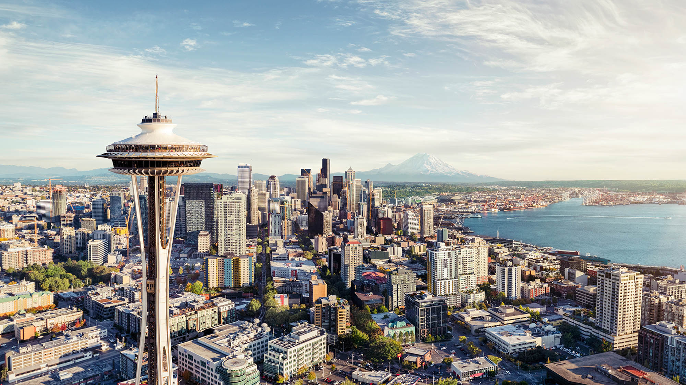

My Favorite Destinations
Kyoto
Kyoto is a historic city in Japan known for its beautiful temples, traditional gardens, bamboo forests, and rich cultural heritage. It is one of the best places to experience traditional Japanese culture.
- Province: Kioto Prefecture
- Country: Japan
- Population: 1.46 million
- Latitude & Longitude: 35.0116° N, 135.7681° E
Flag

London

London is the capital of England and one of the world's most famous cities. It is known for landmarks like Big Ben, Buckingham Palace, the Tower of London, and its diverse culture.
- Province: England
- Country: United Kingdom
- Population: 8.9 million
- Latitude & Longitude: 51.5074° N, 0.1278° W
Flag

Beijing

Beijing is the capital of China and a city with thousands of years of history. It is home to famous attractions such as the Forbidden City, the Temple of Heaven, and the nearby Great Wall of China.
- Province: Beijing Municipality
- Country: China
- Population: 21.9 million
- Latitude & Longitude: 39.9042° N, 116.4074° E
Flag
Seattle

Seattle is a major city in the United States, famous for its technology industry, coffee culture, and beautiful waterfront. Popular attractions include the Space Needle, Pike Place Market, and nearby mountains.
- Province: Washington
- Country: United States
- Population: 755,000
- Latitude & Longitude: 47.6062° N, 122.3321° W
Flag
Rome

Rome is the capital of Italy and one of the oldest cities in the world. It is famous for its ancient ruins, including the Colosseum and Roman Forum, as well as its art, history, and delicious Italian cuisine.
- Province: Lazio
- Country: Italy
- Population: 2.8 million
- Latitude & Longitude: 41.9028° N, 12.4964° E
Flag